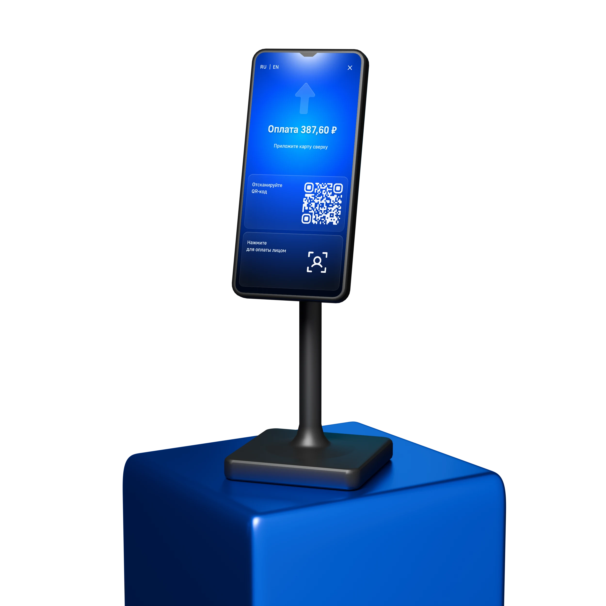
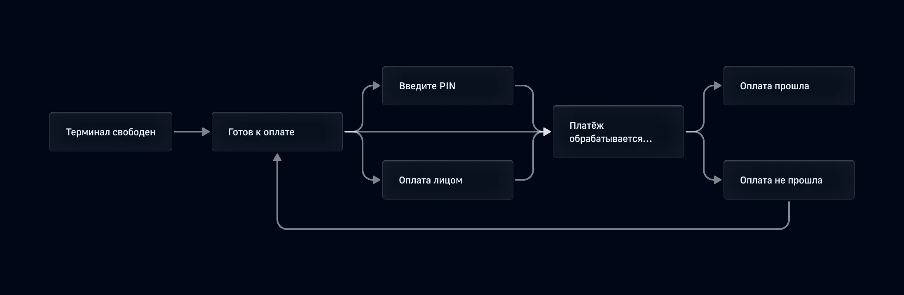
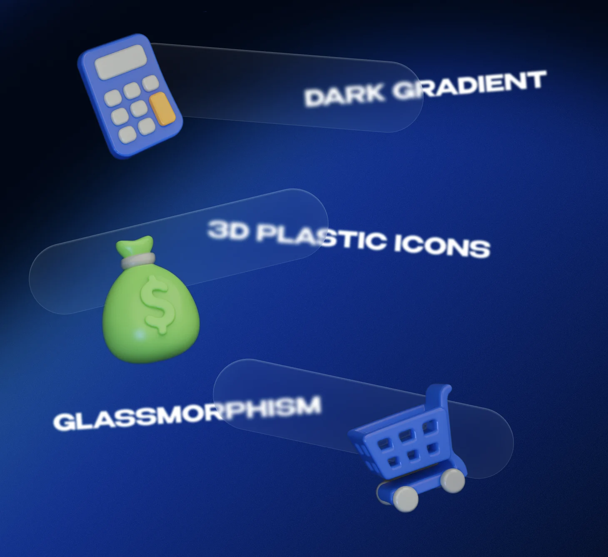
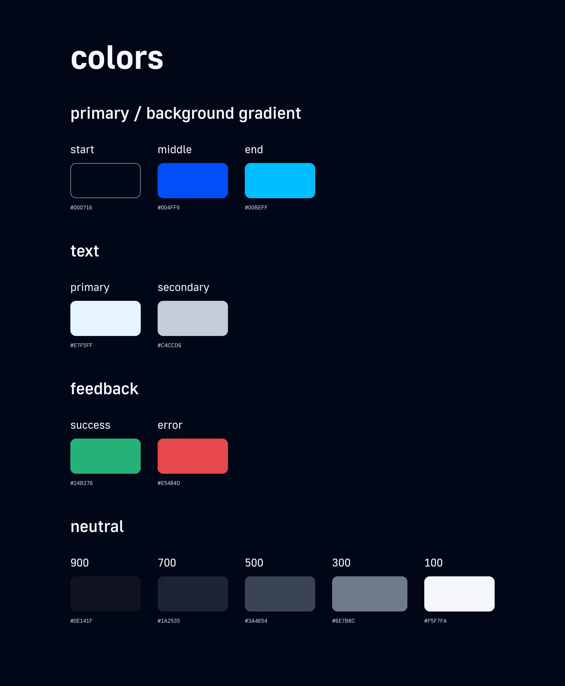
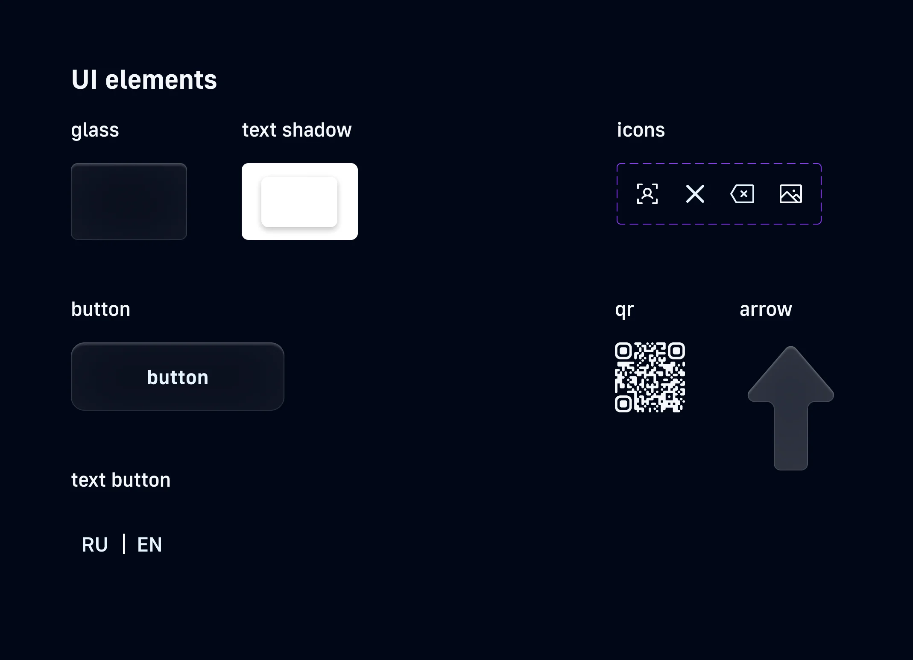
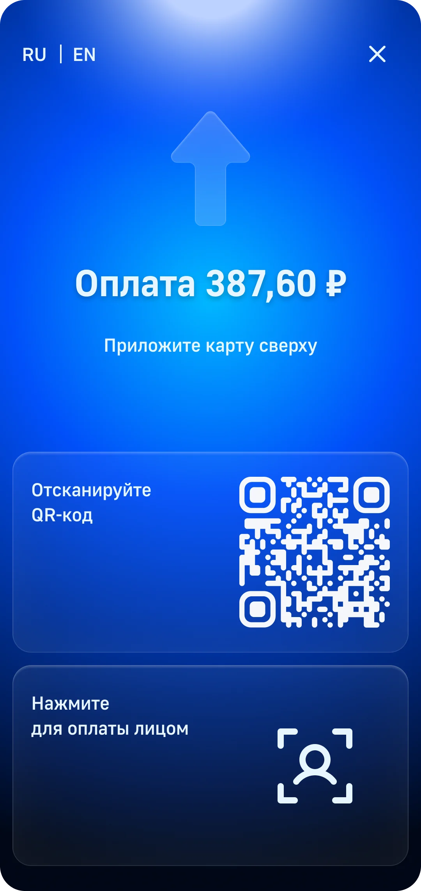
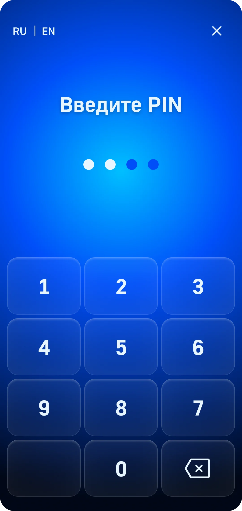
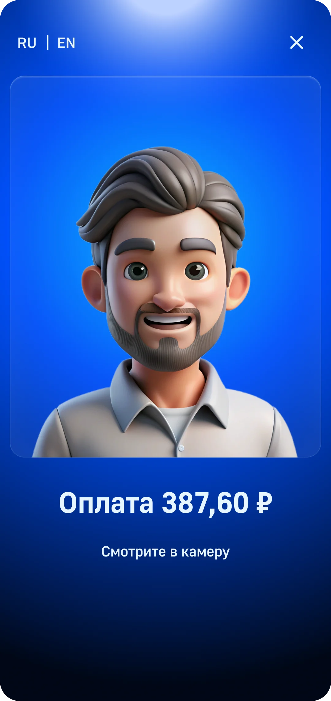
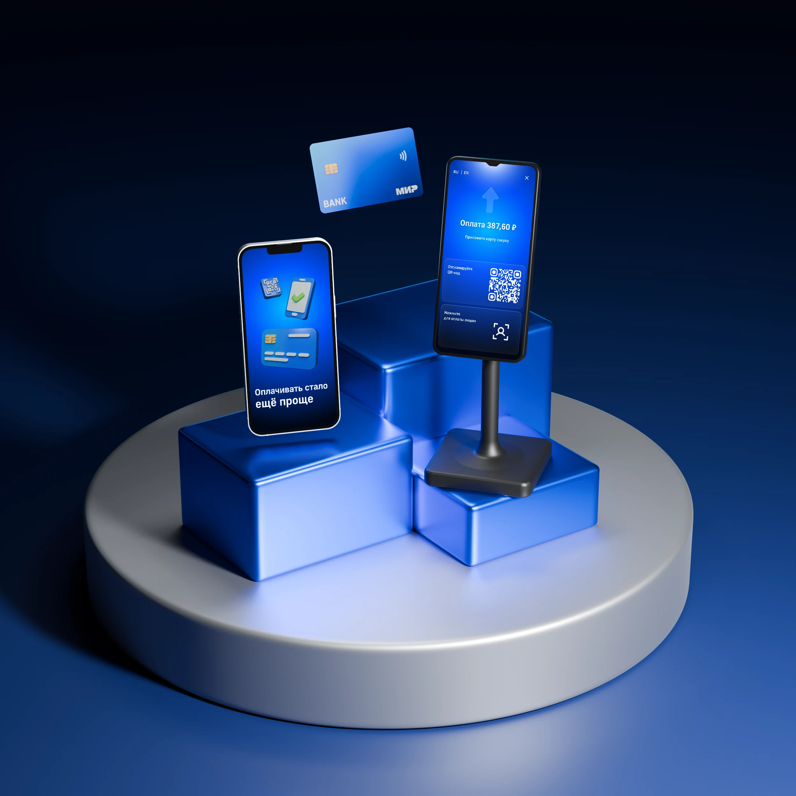

Объединить способы оплаты
Карта, NFC, QR и биометрия должны работать внутри одной логики.
Product design · ВТБ · 2025
Концепция интерфейса терминала нового поколения: карта, NFC, QR и биометрия в одном понятном сценарии.

Обзор
В учебном проекте курса ВТБ я спроектировала интерфейс вертикального сенсорного терминала: от логики сценариев и карты состояний до UI‑системы и 3D‑модели устройства.
Задачи
Терминалом пользуются в спешке и с разным цифровым опытом, поэтому интерфейс должен объяснять себя без помощи кассира.
Карта, NFC, QR и биометрия должны работать внутри одной логики.
Человек сразу понимает, что происходит и нужно ли что‑то делать.
Очередь, шум, занятые руки, задержки сети и разный цифровой опыт.
Что сделала
Сначала я сравнила классические и сенсорные терминалы, разобрала ограничения среды и выделила главный барьер: неясная обратная связь заставляет людей повторять действия.
Общий сценарий для карты, телефона, часов и платёжного стикера.
Код появляется на терминале, подтверждение проходит на телефоне.
Камера запускает сценарий без карты или телефона.

Затем я сократила сценарий до необходимых действий и связала каждое решение с конкретным барьером.
Карта, NFC, QR и биометрия находятся на стартовом экране.
Минимум текста и никаких промежуточных подтверждений.
Обработка, успех и ошибка различаются текстом, формой, иконкой и звуком.
Вместо технического кода пользователь видит причину и действие «Повторить».
После проверки логики на вайрфреймах я собрала визуальную систему. Тёмная основа удерживает контраст, а цвет и 3D‑иконки выделяют состояние операции и следующее действие.

Эффекты создают характер, но не конкурируют с суммой, статусом и следующим действием.


Финальные экраны показывают путь от готовности к оплате до результата. Статусы различаются не только цветом, но и текстом, формой и иконкой.




Результат
Получилась цельная продуктовая концепция, в которой сценарий, UI‑система и форма устройства работают вместе. Следующий шаг — проверить решения usability‑тестами на реальном терминале.